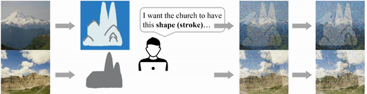

Xinrui Zu
I am a research assistant at Department of Imaging Physics, TU Delft, Netherlands, where I am advised by Dr. Qian Tao and working on Generative Models, Unsupervised Learning, Machine Learning theories, etc. I finished my MSc at Robotics and Mechatronics group, University of Twente, with my thesis focusing on diffusion-based generative models. I did my bachelors at Fudan University, majored in Theoretical and Applied Mechanics.
News
Recent Projects
These projects are sorted by time.
Our proposed generative framework (COT Flow) achieves fast and high-quality generation with improved zero-shot editing flexibility compared to previous diffusion models (under review).
Unpaired image-to-image translation:
Zero-shot image editing scenarios. 1. Image composition:

2. Stroke-texture coupling:
3. Zero-shot image augmentation:
We present contrastive HeartFlow (cHeartFlow), a novel generative framework to synthesize cardiac magnetic resonance (CMR) images from simple sketches by training on contrastive pairs of images and sketches.
cHeartFlow generation compared with popular GAN-based and diffusion-based models:
Zero-shot MRI registration using cHeartFlow with trade-off between registration accuracy (faithfulness) and image quality (realism). The below GIFs: (1) Original MRI cycle. (2) Registration with control parameter t=0.75. (3) t=0.5. (4) t=0.25:
cHeartFlow overview ((a) training and (b) sampling):
I developed a web-based medical image synthesis platform called DiFine UI. The platform is based on the proposed model LSDM. The platform allows users to draw any medical images from sketches and control the synthesis by adjusting the diagnosis parameters through our proposed inpainting classifier guidance. DiFine UI is developed using Uvicorn and FastAPI.
DiFine UI possesses 3 main functions: drawing, controlling, and diagnosis training. The drawing mode allows users to draw any medical images from sketches using different brushes. The control mode allows users to adjust the diagnosis parameters to control the synthesis. The diagnosis training allows users to practice and evaluate the diagnosis based on synthesized images, enabling educational applications.
Function 1. Drawing:
Function 2. Controlling:
Function 3. Diagnosis Training:
Overview of the proposed model (Latent Semantic Diffusion Model, LSDM):

Generation comparison of the lung CT scans between the proposed model and the popular SPADE model (notice the details of the lobes boundaries in the proposed model):

Proposed inpainting classifier guidance for the controllability of the CT scan synthesis. The guidance scale is controllable to adjust the malignancy of the synthesized CT scans:
We proposed a new visualization method called SpaceMAP, which visualizes data of any dimensionality on a 2- dimensional map. Different from previous DR methods, we analytically derived a transformation of distance between high- and low-dimensional spaces to match their capacity. We further show that the transformation provably reduces the intrinsic dimension of high-dimensional data, within the framework of maximum likelihood intrinsic dimensionality estimation.
The following figure shows the result comparison with other methods:
SpaceMAP optimization process as the "unrolling" of the Swiss Roll dataset:
Since Sep. 2021, I work as a research assistant in the Department of Imaging Physics (ImPhys), TU Delft. My research topics include deep learning domain adaptation of the MRI segmentation tasks, MRI image processing and manifold learning.
Based on the observation of the organ-related cracks in the visualization of the neural network’s representation spaces (hidden layers’ outputs) for segmentation (UNet-like neural networks), I propose a visualization method of the cracks for evaluating the segmentation quality. I observe that UNet-like model tend to generate these cracks in the hidden layers based on the skip-connection mechanism.
We propose deep recursive embedding (DRE), a dimensionality reduction (DR) method to embed high-dimensional data into low-dimensional space (often into 2D space for visualization). DRE makes use of the latent data representations for boosted embedding performance and can map out-of-sample data and scale to extremely large datasets. Experiments on a range of public datasets demonstrated improved embedding performance in terms of local and global structure compared to the state-of-the-art methods.
The optimization process of the dimensionality reduction of MNIST dataset is shown in the GIF below:

I designed a STM32 low-level controller for the ROS autonomus vehicle to control both the IMU and the motors. I built the ROS packages in Noetic version and deployed them into the RPi Ubuntu system. I used Gmapping SLAM algorithm to construct the maps.


SmartArm is a series of reconfigurable modular robotic manipulators using full closed-loop perception control and adaptive control to achieve the same repeatability with much more expensive robotic manipulators. Using multi-sensor system and removable structure, it will adapt to multi-environment tasks. Smartarm is fully built by my own and I will do further research based on this platform. Smartarm uses ROS noetic as the middleware and the physical structure was designed through Fusion 360 Autodesk.
Combined with my project Ultrasonic Localization System, SmartArm has a full closed-loop controller with two end-effector localization modes: fast response mode (FRM) and smooth response mode (SRM). The first GIF above (left) shows the reaction speed test of `end effector tracking` with SmartArm's sonic localization system, which is illustrated in the next section. The second GIF on the right shows Smartarm's `motion planning & execute` pipeline using `MoveIt!` with my own asynchronous adjustments (SmartArm can adapt new trajactories while executing to follow the target). I also created a `MoveIt!` function called `asyncPlanAndMove()` after changing `MoveIt!` source code to reach my planning goal.
SmartArm Controller
Currently I am developing a real-time dynamic controller of Smartarm. It transits the position signal generated by the main compute unit (Linux) into force signal (joint space). I used adaptive feedforwared control (AFC) to learn the dynamic parameter of the manipulator. For some repeatable tasks like pick and place, I will also develop iterative learning control (ILC) to improve control accuracy.
SmartArm with MoveIt!
I also developed a MoveIt! simulation&control environment for Smartarm. I developed my own MoveIt! `move_group` function to fit the motion planning algorithm. The function `move()` in MoveAction's client has been adjusted as `smartarm_move` to fulfill the fast generation of the trajectory.
The structure above shows Smartarm's MoveIt! functions w.r.t. sensor system and the main control loop. I will continue to develop the low-level real-time controller to improve the performance of Smartarm.

I combined my previous sonic localization system and IMU together with `extended Kalman Filtering`. The accuracy of the localization is now about 0.5mm in xyz axis and about 0.01rad in 3 rotation axis.
This sensor system uses `STM32F103RCT6` as the control unit. I developed `DMA(direct memory access)` and `hardware boosting` to calculate the sensors' data faster. The sampling rate is 1000Hz.
When I was at Fudan university, I was the host and also the lecturer of every year's National Youth University Science Camp. In 2019's Science Camp, I developed a ROS mobile platform with `Raspberry Pi 3B` as the main controller. The vehicle used lidar as the input and used ROS `gmapping` package for SLAM algorithm.
In the lecture called `Basic robotics: from theory to practice`, I used this as the tutorial platform and train 100 students the basic SLAM implementing and ROS programming. It was an interesting experience with all the students from high school who brought much curiosity to the workshop. Hope them dive into the fantastic robot world!
3Arobot is a series of robotic manipulators printed by the 3D printers. These manipulators have competitive accuracies and repeatabilities. They have the ability to write and draw on a paper with certain end effectors. Furthermore, with a heating extruder, they can be used as 3D printers.
Talks
Publications
Conference Papers:
- cHeartFlow: Synthesizing cardiac MR images from sketches
X. Zu, Q. Tao
MIDL 2024 | Paper - SpaceMAP: Visualizing High-dimensional Data by Space Expansion
X. Zu, Q. Tao
ICML 2022 | Paper | Code - AI Analysis for low-field CMR: A head-to-head comparison of cine MRI at 0.35T, 1.5T, and 3.0T
X. Zu, J. Varghese, O. Simonetti, Q. Tao
SCMR 2022 | Paper
Journal Papers:
- Deep Recursive Embedding for High-Dimensional Data
Z. Zhou, X. Zu, Y. Wang, B. P. F. Lelieveldt, Q. Tao
IEEE TVCG 2022 | Paper | PyTorch Code
Thesis:
- Fast and Precise Lung CT Image Generation via Diffusion Models Paper